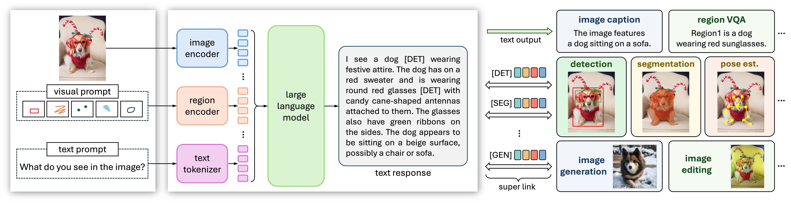
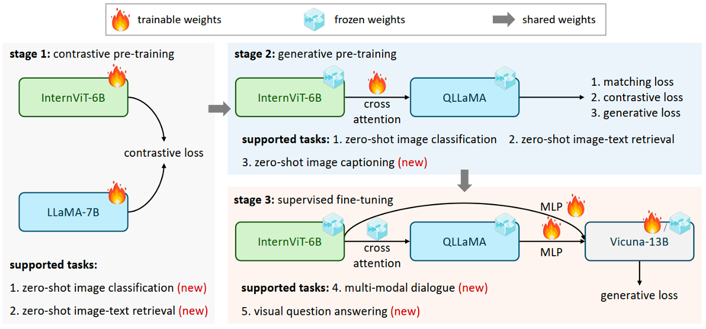
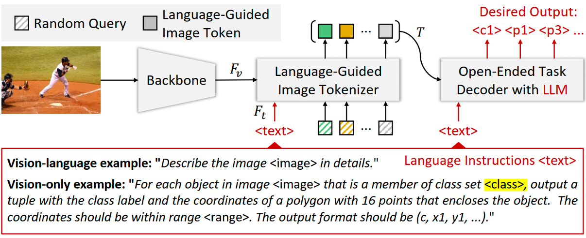

|
Jiannan Wu (吴剑南)
I am a fourth-year (2020-now) Ph.D. student in Department of Computer Science, The University of Hong Kong, advised by Prof. Ping Luo and Prof. Wenping Wang.
Before that, I obtained my bachelor and master degree from Electrical Engineering Department, Xi'an Jiaotong University.
My research interest lies in computer vision and deep learning. Previously, I mainly work on instance-level understanding in images and videos, including object segmentation and object tracking.
Currently, my research focuses on multimodal large language models, generalist foundation models.
Please feel free to drop me an email if you are intested in my research or seek for possible collaborations.
Email /
Google Scholar /
Github
|
|

|
VisionLLM v2: An End-to-End Generalist Multimodal Large Language Model for Hundreds of Vision-Language Tasks
Jiannan Wu*, Muyan Zhong*, Sen Xing*, Zeqiang Lai*, Zhaoyang Liu*, Zhe Chen*, Wenhai Wang*, Xizhou Zhu, Lewei Lu, Tong Lu, Ping Luo, Yu Qiao, Jifeng Dai
arxiv preprint, June, 2024
Paper /
Code /
Project Page
|
|

|
InternVL: Scaling up Vision Foundation Models and Aligning for Generic Visual-Linguistic Tasks
Zhe Chen, Jiannan Wu, Wenhai Wang, Weijie Su, Guo Chen, Sen Xing, Muyan Zhong, Qinglong Zhang, Xizhou Zhu, Lewei Lu, Bin Li, Ping Luo, Tong Lu, Yu Qiao, Jifeng Dai
IEEE/CVF Conference on Computer Vision and Pattern Recognition (CVPR), 2024, (Oral)
Paper /
Code
|
|

|
VisionLLM: Large Language Model is also an Open-Ended Decoder for Vision-Centric Tasks
Wenhai Wang*, Zhe Chen*, Xiaokang Chen*, Jiannan Wu*, Xizhou Zhu, Gang Zeng, Ping Luo, Tong Lu, Jie Zhou, Yu Qiao, Jifeng Dai
Advances in Neural Information Processing Systems (NeurIPS), 2023
Paper /
Code
|
-
Hong Kong PhD Fellowship, 2020 - 2024
-
First-class Academic Scholarship, 2018, 2019
-
First-class Recommended Postgraduate Scholarship, 2017
-
UHV Scholarship (top1%), 2016
-
National Scholarship, 2014, 2015
-
Conference Review:
Conference on Computer Vision and Pattern Recognition (CVPR)
International Conference on Computer Vision (ICCV)
European Conference on Computer Vision (ECCV)
-
Journal Review:
IEEE Transactions on Pattern Analysis and Machine Intelligence
IET Computer Vision
|